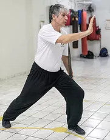
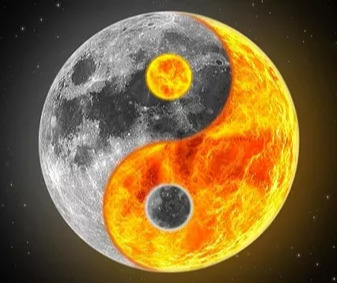
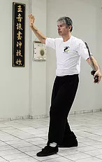

Princípios do Tai Chi Chuan
Princípios do Estilo
A harmonia adequada de Corpo e Chi cria energia utilizável chamada (Jing.) Em Tai Chi, a mente primeiro controla o corpo, então o movimento do corpo cultiva energia interna, abrindo vias de energia (Lu) e agitando juntas e centros de liberação de energia do corpo . Além disso, o movimento adequado das extremidades controla a forma como o centro do corpo se move.
O treino harmonioso, combinando relaxamento, respiração, onde está a intenção andam todos juntos, no caso do estilo Yang de Tai Chi Chuan a primeira enfase está em manter o corpo equilibrado, neutro de tensões, a suavidade e o movimento relaxado são ensinados para posteriormente trabalhar a intenção, na qual haverá a necessidade de uma explosão das juntas.
Não se pode entender todos os níveis ao mesmo tempo, até que se pratique há muito tempo. Uma vez que você realmente entende todos esses níveis (fazendo), torna-se ainda mais inútil tentar explicar todos de uma só vez. Mesmo com tantas variações de estilos de tai chi atualmente, todos tem o mesmo objetivo, alterando apenas a forma de se treinar.
Tai chi chuan é dito ser "Yi Rou Ke Gang", o que significa basicamente que a suavidade supera a dureza. Enquanto as interpretações modernas da arte cresceram para definir Tai Chi Chuan como uma arte completamente macia, este princípio de suavidade não pretende definir o nível de dureza ou suavidade usado na arte, mas um método específico para engatar força forte usando a suavidade, o que neste caso nem sempre é a suavidade real dos membros ou mesmo a aplicação, mas uma flexibilidade ou não rigidez para a mudança e força.
A dificuldade no treino de Tai Chi Chuan está em aprender inicialmente movimentos muito técnicos que confundem e exigem coordenação do praticante. Devido a isso se torna mais fácil treinar de forma lenta, podendo assim sentir as respostas do próprio corpo, os pontos de tensão, a respiração, o equilibrio, a intenção, a energia.
O interesse e disposição fisica e mental são elementos fundamentais para aqueles que querem treinar, motivo este que não agrada a todos, é necessário comprometimento com o treino. Ao aprender os movimentos do tai chi e reconhecer as presenças de energia, suaves e violentas, leves e enérgicas você as combina,este é o reflexo do que chamamos yin e yang, mais de um, menos de outro, um dentro do outro, equilibrio dos dois e mudança quando necessário.
  Teoria sobre as 13 Posturas Principais Praticadas no Tai Chi Chuan Apresentadas sob Versos
(Texto Traduzido de Yang Cheng Fu)
Nas treze posturas principais não há nenhuma para subestimar.
A fonte do significado está na região da cintura.
Você tem que prestar atenção às transformações da passagem de vazio e cheio, e o chi que move ao longo de seu corpo sem o obstáculo mais leve.
No meio de quietude a pessoa entra em contato com movimento, mudança como se permanecendo ainda.
Outorgando com o oponente da pessoa, as transformações ocorrerão perfeitas.
Para cada e toda postura, concentre sua mente e considere o significado das aplicações.
Você não adquirirá isto sem se desgastar muitas vezes em esforço conscientemente (kung fu).
Momento através de momento, mantenha a mente/coração na cintura.
Com o mais baixo abdômen completamente solto, o chi ascenderá em seu próprio.
O cóquix está centralmente alinhado, e o espírito enfia à coroa da cabeça. O corpo inteiro está claro e ágil quando a cabeça estiver suspensa à coroa.
Cuidadosamente concentre em seu estudo.
O dobrando, estendendo, enquanto abrindo e fechando: Os deixe vir o próprio deles.
Entrando no portão e sendo conduzido o caminho, isto tem que vir de orientação oral.
Para mostrar constantemente a si mesmo o método é o auto-cultivo.
Se você pergunta, o que são os critérios de essência e aplicação? Intenção e chi são a autoridade, ossos e tecidos são os assuntos.
Se você quer descobrir onde, no fim, mente o propósito, é aumentar longevidade e estender os anos da pessoa, uma estação da primavera de mocidade.
Esta canção, oh, esta canção, tem cento e quarenta palavras. Toda palavra é verdade e concisa, não há nenhuma omissão.
Se investigação proceder sem levar em conta isto, os esforços ( kung fu ) da pessoa serão desperdiçados, e isto só causará para suspirar com pesar.